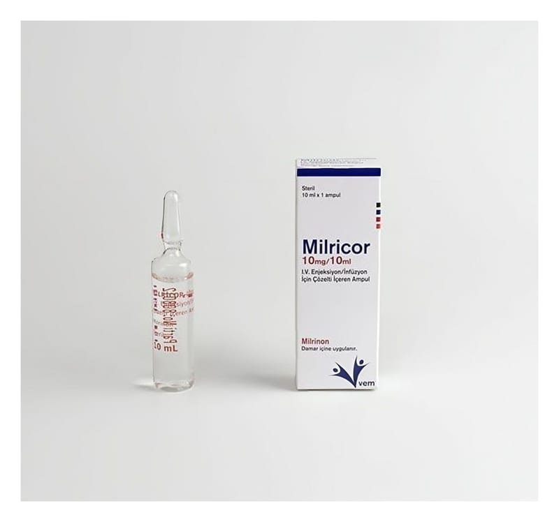

Milricor 10 mg/10 ml IV Enjeksiyon / İnfüzyon İçin Çözelti İçeren Ampul, 1 Adet

Ne için kullanılır
KT · Bölüm 1MİLRİCOR, berrak, renksiz–soluk sarı, steril, çözelti içeren renksiz cam ampul içerisinde damar içine uygulanan ve bazı kalp hastalıklarının tedavisinde kullanılan bir ilaçtır. MİLRİCOR, bir kutuda 1 adet, 10 ml çözelti içeren 10 ml’lik renksiz cam ampul bulunan ambalajlarda sunulmaktadır. MİLRİCOR aşağıdaki durumlarda kullanılabilir:
- Klasik tedaviye yanıt vermeyen şiddetli konjestif kalp yetmezliğinin (kalbin vücudun ihtiyacı kadar kan pompalayamaması) kısa süreli tedavisinde, - Kalp cerrahisi sonrası düşük çıkış (output) durumlarını da içeren akut kalp yetmezliği olan hastaların tedavisinde kullanılır.
MİLRİCOR çocuklarda aşağıdaki durumlarda kullanılabilir: - Diğer ilaçlar ile sonuç elde edilmediği durumlarda, şiddetli konjestif kalp yetmezliğinin (kalbin vücudun ihtiyacı kadar kan pompalayamaması) kısa süreli tedavisinde (35 saate kadar) - Kalp cerrahisi sonrası akut kalp yetmezliği olan hastaların kısa süreli tedavisinde (35 saate kadar) örneğin kalbin vücuda kan pompalamasında sorun olduğu durumlarda